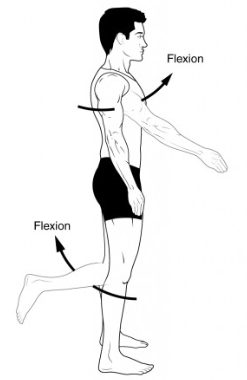
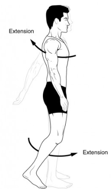
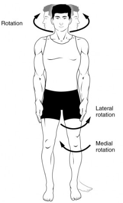
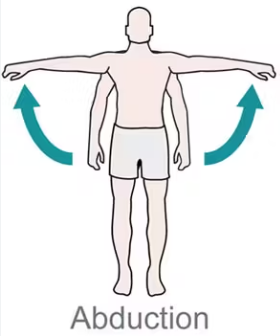
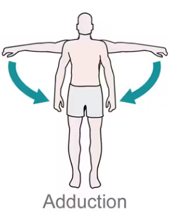
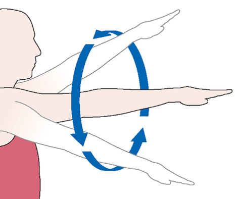

Joint movements are essential for the functioning of the skeletal system. Here are some key types of movements:
Flexion is the bending of a joint, decreasing the angle between the bones. An example is bending the elbow or knee.
Extension is the straightening of a joint, increasing the angle between the bones. An example is straightening the elbow or knee after flexion.
Rotation involves turning a bone around its own axis. This can be seen when shaking your head “no” or twisting your torso.
Abduction is the movement of a limb away from the midline of the body. For example, lifting your arm sideways away from your body.
Adduction is the movement of a limb toward the midline of the body. For instance, bringing your arm back down to your side.
Circumduction is a circular movement that involves moving a limb in a circular path, combining flexion, extension, abduction, and adduction. An example is moving your arm in a circular motion.
